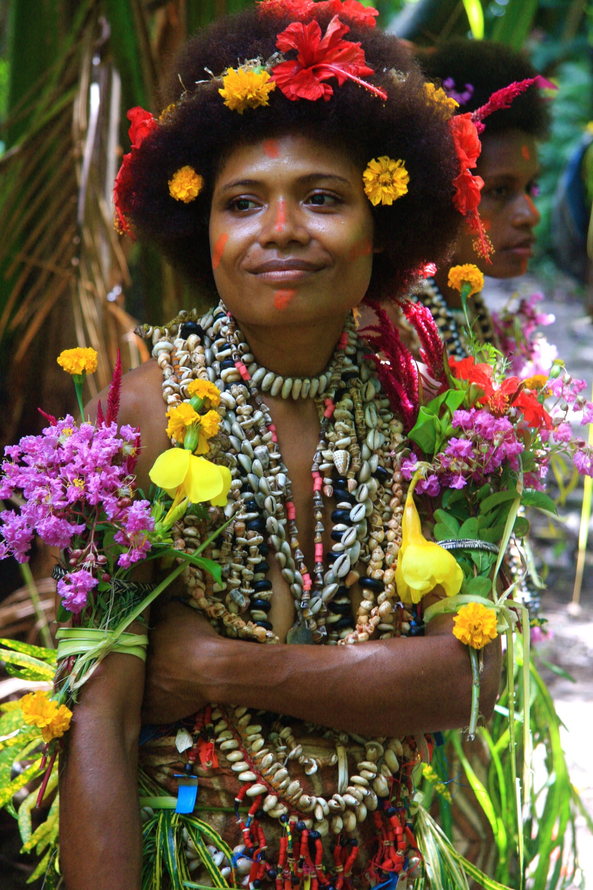

Reflection on AP Month!
What is the most important thing I learned from the event?
During Araling Panlipunan Month, I learned how important it is to understand our culture, history, and the issues that affect our country. Learning about the 2017 Philippine National Demographic Survey helped me see how numbers and data show the real situations of Filipino families. It made me realize that studying AP is not just about memorizing lessons but about understanding real people and their lives.
How can I apply what I learned in real-life situations?
I can apply what I learned by being more aware of the problems and strengths of our country. I can use facts and data to understand national issues better and make informed opinions. I can also be more respectful of different cultures and continue learning about our history and society.
Did I actively participate in the event? How?
Yes, I actively participated in AP Month. I participated in the editorial cartoon making, which helped me express ideas about society through art. I also learned about the Philippine National Demographic Survey of 2017 while preparing for the quiz bee. Wearing traditional clothes from different countries was another part I enjoyed because it made me appreciate different cultures.
If I were to teach this topic or subject to a classmate, how would I explain it?
If I were to teach this to a classmate, I would explain that AP Month helps us understand our country and the world better. It teaches us how history, geography, and culture shape the way people live and think.
Why is it important to have events like this?
Events like AP Month are important because they help students become more aware of society and culture. They make learning more fun and meaningful while reminding us to be proud of our identity as Filipinos. These activities also teach us to respect other cultures and understand the importance of unity in diversity.
